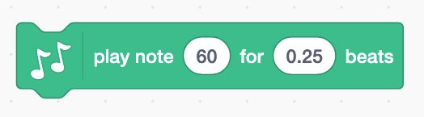
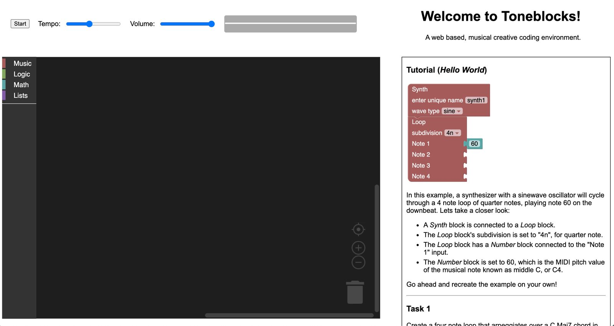
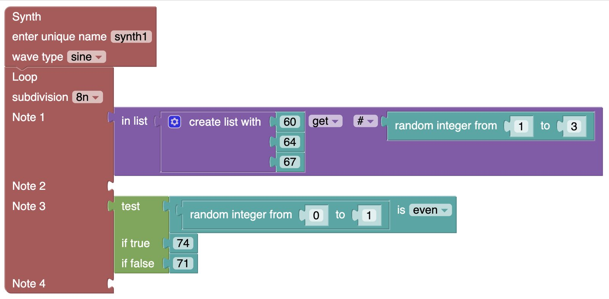

Toneblocks: Block-based musical programming
Abstract
Block-based coding environments enable novices to write code that bypasses the syntactic complexities of text. However, we see a lack of effective block-based tools that balance programming with expressive music making. We introduce Toneblocks1, a prototype web application intended to be intuitive and engaging for novice users with interests in computer programming and music. Toneblocks is designed to lower the barrier of entry while increasing the ceiling of expression for advanced users. In Toneblocks, users produce musical loops ranging from static sequences to generative systems, and can manipulate their properties live. Pilot usability tests conducted with two participants provide evidence that the current prototype is easy to use and can produce complex musical output. An evaluation offers potential future improvements including user-defined variables and functions, and rhythmic variability.
Author Keywords
creative coding; block-based programming; educational tools; web audio; music
CCS Concepts
• Applied computing → Sound and music computing; • Human-centered computing → User centered design; Web-based interaction;
Introduction
The ubiquity of personal computing and internet technologies has led many educators to embrace programming as a means to foster creative thinking in youth. Building on Dewey’s philosophy of experience [1] and Piaget’s theory of constructivism [2], Papert’s Logo programming language enabled a hands-on approach toward learning to code with simple instructions and visual art [3]. Building on Logo’s innovations, Guzdial proposed the Media Computation approach to introducing computing in which learners manipulate a range of images, audio, and other media files [4]. “MediaComp” curricula and technologies have been widely used and adopted. As early advances in computing education demonstrate, an experiential and tailored approach to teaching supports a wide range of learners in gaining valuable problem solving skills [5].
Block-based programming is an increasingly common paradigm used to introduce novices to programming, allowing users to drag, drop, and snap together code blocks to form scripts [6]. This approach can be less intimidating, and it allows developers to define and limit the available blocks to support a specific topic or activity (e.g. loop-based music synthesis). Scratch, the most widely used block-based environment [7], allows users to create games and animations and manipulate sounds.
The intersection of computer programming education and music has seen a number of innovations including the text-based environments EarSketch [8], and Sonic Pi [9]. Scratch supports musical sequences and event triggering with a keyboard or controller like the Makey Makey [10], and has even been used as the basis for entire curricula introducing code through music [11][12]. However, musical content is expressed in plain, single-note statements (Figure 1) limiting opportunities to incorporate logic within musical sequences. Further, advanced uses like syncing rhythmic content requires difficult and unintuitive workarounds, seemingly due to a lack of an audio timing system. Often users opt to import music outside of Scratch for their projects [13]. Blocky Talky [14], another block-based programming environment, allows users to network and program the musical and interactive behaviors of synthesizers and sensing devices.


Figure 1: Scratch block “play note 60 for 0.25 beats”
Toneblocks builds upon the foundations set by Scratch and Blocky Talky by leveraging modern frameworks such as the Web Audio API and reconsidering how the affordances of a small set of blocks might promote fun interactions with music synthesis.
Toneblocks Design
The current Toneblocks prototype consists of an interactive, block-based interface, audio output, and documentation. The core functionality is built on Blockly [15], a framework for creating block-based programming editors, and Tone.js [16], a framework for creating interactive music in a browser. Toneblocks is written in HTML, CSS, and Javascript, and is hosted via GitHub Pages.
The interface presents a scaffolded introduction for making music with visual code and consists of a toolkit containing available blocks, a workspace in which they can be dragged, and an embedded tutorial. The toolkit includes blocks for standard datatypes like integers and booleans, programming constructs like conditionals and lists, and custom music blocks such as synth, loop, and volume. The introductory tutorial displays a simple musical example that can be copied and run. Additional controls include a “Start” button, global tempo and volume sliders, and an animated oscilloscope. Synthesizer parameters and note inputs can be modified in real time. Live manipulation during playback is intended to foster a sense of play enabling users to jam and improvise in response to emergent features of their sound system [17].


Figure 2: The Toneblocks interface.
Music Blocks
Designed entirely around synthesis and sequencing, Toneblocks introduces four new music blocks: synth, volume, a 4-note loop, and an 8-note loop. The synth block takes a unique name to handle routing, and has a drop down menu for wave type: sine, square, triangle, sawtooth. The loop blocks control the sequence of pitches, which are repeated indefinitely at the specified subdivision: 1n, 2n, 4n, 8n, 16n. Each input to the loop block accepts a MIDI note number or an operation that resolves to a MIDI note number (Figure 3). Empty slots are rests. The vertical layout of the sequence blocks is intended to encourage users to build nested computational operations resulting in complex, generative musical scripts. While synths are monophonic, more than one can be dragged into the workspace enabling polyphony and rhythmic syncopation. As indicated above, loops are editable during playback allowing users to experiment with computational operations and make changes based on immediate auditory feedback.


Figure 3: A Toneblocks script using nested blocks.
Usability Testing
We conducted an initial round of usability testing in which we asked participants to complete four tasks, designed to scaffold users’ introduction to Toneblocks, and then engage in a semi-structured interview. We hoped first to evaluate how quickly users understood its interface, and second to observe whether and how it could be used for open-ended experimentation and play. For example, Task 1 specified a musical output, “Create a four note loop that arpeggiates over a C Maj7 chord in eighth notes, played by a synth with a triangle wave oscillator…”, while Task 4 simply stated “Make music however you see fit.” To be clear, while Toneblocks is intended to provide an approachable environment introducing concepts in coding, these initial tests seek to capture the usability of the current, early-stage design rather than learning gains of the participants.
Two adults, both with college experience in music making and programming, participated in the experiment. Due to COVID-19, each session was conducted remotely within Zoom and recorded with consent for later analysis. Participants shared their screens while one researcher timed each task and took notes on participant actions and verbal feedback. The researcher did not help participants and interjected only when unforeseen bugs occurred, e.g. to suggest a user scroll down once a resizing issue concealed a portion of the screen. During the semi-structured interview, the researcher asked users to reflect on their experiences, to identify difficulties they faced, and to suggest improvements.
Usability Results & Feedback
Participants completed each task with relative ease, taking under 2 minutes each to complete the first two, and 7-11 minutes to incorporate, randomization and logical operators in open-ended explorations. One participant employed low MIDI pitch values and multiple synth blocks to explore rhythmic sounds and syncopation, a surprising workaround to incorporate percussion that we had not explored in our own testing.
Participant feedback from testing sessions was largely positive and insightful. Participants understood how their code translated into audio, and felt that the computational and mathematical operant blocks allowed for randomization and interactivity in the music they created.
As past researchers note [18], blocks-based code often becomes difficult to navigate, debug, and maintain as more concurrent scripts are added in disorganized arrangements. Our participants' actions reflected such difficulties as their scripts grew in complexity. Participants noted a desire for user-defined variables and functions to simplify redundancies, as well as advanced musical options like variable length loops and note durations, and note-triggering outside of a loop.
Conclusion & Future Work
The Toneblocks prototype is a block-based musical programming web application. Early evidence suggests that Toneblocks presents an easily usable interface for creating music with blocks, despite some complications. Two users who participated in a usability study and interview possessed prior experience in music making and computer programming, and they engaged with and pushed Toneblocks accordingly. Testing with novices is necessary to identify barriers that users without code or music knowledge face. Future work will incorporate variable-length loops, note durations, and rhythmic patterns, as well as coding constructs including user-defined variables and functions. We hope that this work sparks discussion on how to approach the design of blocks-based interfaces to promote authentic music-making and expressive play.
Acknowledgments
We thank Dr. Morwaread Farbood for guidance and support of this project.
Compliance with Ethical Standards
The study was done in compliance with the New York University Institutional Review Board. Participants provided consent and were free to abandon the testing session at any time.
Footnotes
Toneblocks video demo: https://youtu.be/rq1xpfseygU
↩
Citations
Dewey, J. (1938). Experience and education. New York: Macmillan.
↩Singer, D. G., & Revenson, T. A. (1997). A Piaget primer: How a child thinks. International Universities Press, Inc., 59 Boston Post Road, Madison, CT 06443-1524.
↩Papert, S. (1980). Mindstorms: Children, computers, and powerful ideas. New York, NY: Basic Books.
↩Guzdial, M. (2015). Media Computation and Contextualized Computing Education. In John M. Carroll (Ed.), Learner-Centered Design of Computing Education: Research on Computing for Everyone (pp. 53 - 68). San Rafael, CA: Morgan & Claypool.
↩Turkle S., & Papert, S. (1992). Epistemological Pluralism and the Revaluation of the Concrete. Journal of Mathematical Behavior, 11(1), 3-33. Retrieved from https://www.papert.org/articles/EpistemologicalPluralism.html
↩Weintrop, David & Wilensky, Uri. (2018). How block-based, text-based, and hybrid block/text modalities shape novice programming practices. International Journal of Child-Computer Interaction. 17. 10.1016/j.ijcci.2018.04.005.
↩Resnick, M. (2017). Lifelong kindergarten; Cultivating creativity, through projects, passions, peer, and play. Cambridge, Massachusetts: The MIT Press.
↩Freeman, J., & Magerko, B. (2016). Iterative composition, coding and pedagogy: a case study in live coding with Earsketch. Journal of Music, Technology & Education, 9(1), 57-74.
↩Aaron, S., Blackwell, A., & Burnard, P. (2016). The development of sonic pi and its use in educational partnerships: co-creating pedagogies for learning computer programming. Journal of Music, Technology & Education, 9(1), 75-94.
↩Resnick, M., & Rosenbaum, E. (2013). Designing for Tinkerability. In M. Honey & D.E. Hunter (Eds.) Design, make, play pp. 163-181. Routledge, London.
↩Brown, A. R., & Ruthmann, A. (2020). Scratch music projects. Oxford University Press.
↩Greher, G. R., & Heines, J. M. (2014). Computational thinking in sound: Teaching the art and science of music and technology. Oxford University Press.
↩Payne, W., & Ruthmann, A. (2019). Music Making in Scratch: High Floors, Low Ceilings, and Narrow Walls? The Journal of Interactive Technology & Pedagogy, (15). Retrieved from https://jitp.commons.gc.cuny.edu/music-making-in-scratch-high-floors-low-ceilings-and-narrow-walls
↩Shapiro, R.B., Kelly, A., Ahrens, M., Johnson, B., Politi, H., & Fiebrink, R. (2017). Tangible Distributed Computer Music for Youth. Computer Music Journal 41(2), 52-68. https://www.muse.jhu.edu/article/662534.
↩- ↩
Tone.js https://tonejs.github.io/
↩Collins, N. (2016). Live coding and teaching SuperCollider. Journal of Music, Technology & Education, 9(1), 5-16.
↩Meerbaum-Salant, O., Armoni, M., & Ben-Ari, M. (2011). Habits of programming in Scratch. Proceedings of the 16th annual joint conference on Innovation and technology in computer science education, Darmstadt, Germany, pp. 168-172
↩